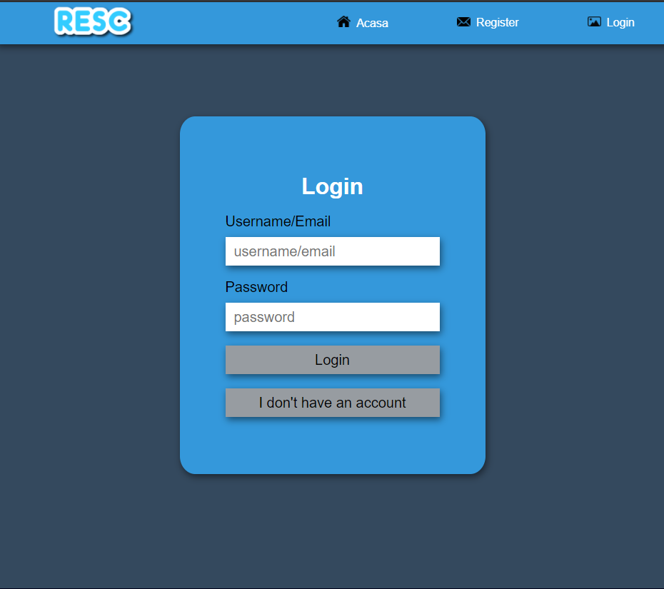
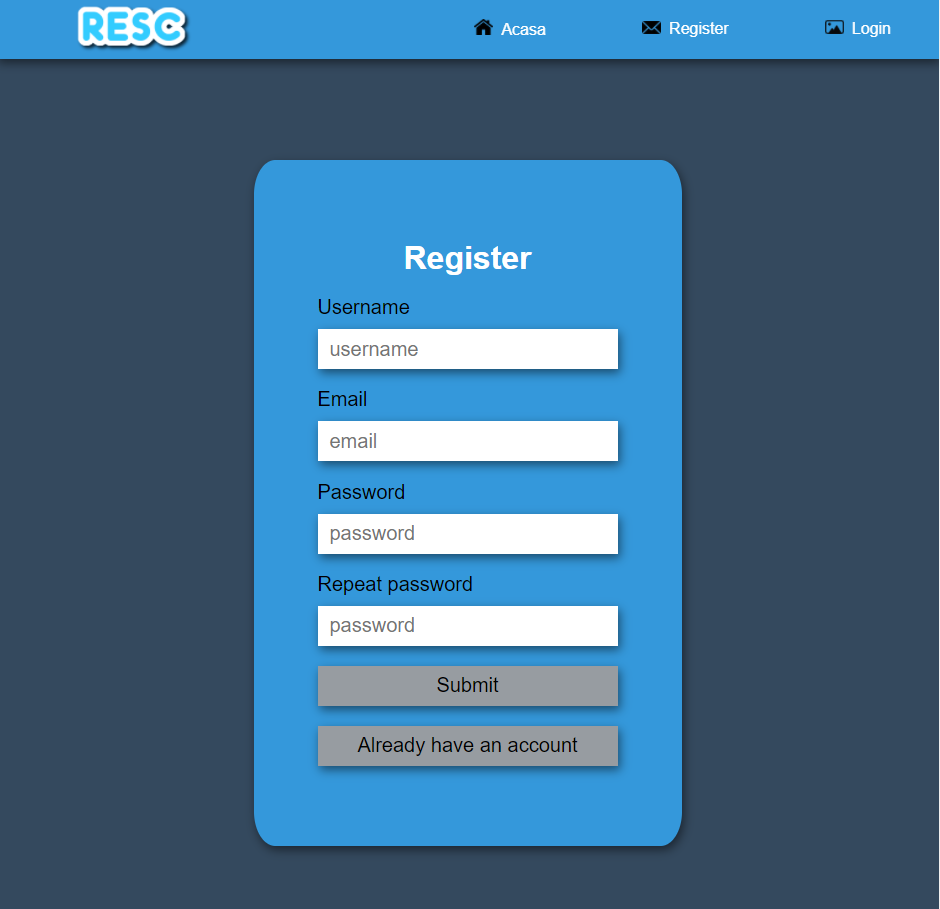
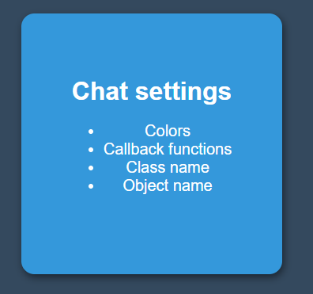
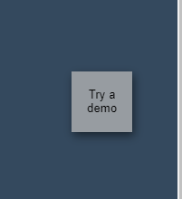
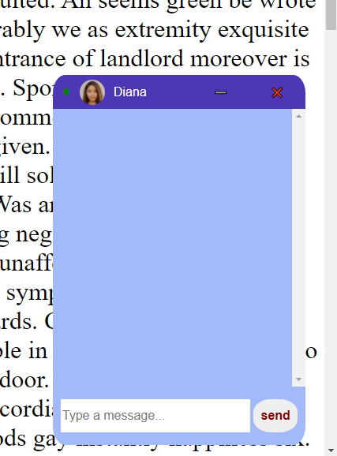

1.Introducere
1.1 Scop
1.2 Convențiile documentelor
1.3 Publicul destinat și sugestiile de lectură
1.4 Domeniul de aplicare al produsului
2. Descriere generală
2.1 Perspectiva produsului
2.2 Funcțiile produsului
2.3 Clase de utilizator și caracteristici
2.4 Mediul de operare
2.5 Constrângeri de proiectare și implementare
2.6 Documentația utilizatorului
3. Cerințe de interfață externă
3.1 Interfețe utilizator
3.2 Interfețe hardware
3.3 Interfețe software
Aceasta aplicatie ofera o solutie Web prin care administratorii pot sa comunice
in timp real. Comunicarea poate fi de tip 1 la 1 sau 1 la multi cu utilizatorii.
Pentru a adauga in pagina un chat este necesar ca acestia sa incarce un script extern
JS intr-un site Web.
Pentru a raspunde in timp real la conversatii, administratorii vor avea
la dispozitie alta aplicatie, plus un API rest sau graphQL, uemand sa le integreze
in propriile Sisteme de Content Management (CRM).
Pentru o folosire cat mai atractiva, acestia pot personaliza diverse proprietati
ale chat-ului, cum ar fi culorile temei din chat, pozitia in pagina, gruparea conversatiilor
in functie de diverse criterii, modul de afisare a avatarelor.De asemenea,
va fi posibila convertirea cuvintelor in emoji-uri si traducerea automata
folosind un API public.
In scrierea acestui SRS am avut in vedere parametrii normali de indentare si pozitionare in pagina.Titlul este scris cu "h1", fiind bold si cel mai mare din pagina, urmand ca fiecare titlu de paragraf sa fie scris cu"h2", iar subtitlurile cu "h3". Am considerat informatiile din paragraful de introducere fiind mai importante decat celelalte, de aceea am folosit "h5" bold, dar un scris nu prea mare. Restul paragrafelor sunt scrise in "p". Delimitarea categoriile am facut-o printr-un "hr".
Aplicatia este destinata administratorilor pentru a comunica in timp real cu utilizatorii precum si developer-ilor,tester-ilor. Utilizatorii sunt in general persoane care isi doresc asistenta in legaturile cu problemele intampinate. Acest document contine un cuprins interactiv pentru a vizualiza exact obiectul de interes.
Utilizarea simplificata a aplicatiei, design-ul interactiv si diversitatea temelor si posibilitatilor oferite reprezinta un plus in fata concurentei.Cu cat mai usor se realizeaza comunicarea, cu atat se castiga mai mult timp pentru alte actiuni.
Aplicatia ReSC poate fi folosita in diverse domenii. Aceasta este alcatuita dintr-un chat support, aplicatia de log in si create user. ReSC-ul poate fi customize-at cu usurinta, asadar este posibila combinarea acestuia cu orice aplicatie compatibila.(diagrama de componente)
Pentru a putea folosi chat-ul,utilizatorii trebuie sa-si faca cont sau sa se logheze daca deja au contul sau sa incerce un demo care nu implica detinerea unui cont.(diagrama clasa sau flux)
Cei care folosesc constat aplicatia vor fi in special administratorii firmei care isi doresc o imbunatatire in sistem prin obtinerea unei comunicari cu clientul fara a intampina dificultati. ReSC este o aplicatie universala, nu e destinata in mod special unui anumit domeniu si poate fi folosit de orice companie isi doreste comunicarea cu clientii.
Aplicatia va fi compatibila pe orice dispozitiv functional cu acces la internet prin cablu sau date si va putea fi lansata atatpe Windows cat si pe Linux. Universalitatea ii ofera un plus considerabil cand vine vorba de utilizare.
ReSC este o aplicatie practica care isi atinge cu succes scopul pentru care a fost creata.Inevitabil limitarea intervine din punct de vedere al utilizarii deoarece este utilizata doar atunci cand este necesara comunicarea administartor client pentru a rezolva o problema sau clarificarea unei nelamuriri.
Aplicatia este una simplista dar de impact, totusi vom avea cateva tutoriale pentru a clarifica eventualele nelamuriri care pot aparea, precum si consiliere online in cazul in care este necesara.
Prin intermediul acestorinterfete se realizeaza logarea, inregistrarea si setarile de customizare:
  Prin intermediul butonului "Try a demo" evitam logarea sau inregistrarea, ajungand astfel direct la chat.
Chatul se va realiza cu unul dintre administratorii site-ului si va contine buton de colapse cat si de close.

In proiectarea interfetelor hardware ne-am bazat pe un design industrial, interactiune prin intermediul tastaurii si a ecranului tactil. Comutarea dintre ferestre se face prin intermediul click-ului atat din mouse cat si pe ecran.Introducerea datelor personale se face prin intermediul tastaturii fizice sau virtuale.
Aceste interfete reprezinta o implementare a unei interfete grafice, rezultatul obtinandu-se folosind html5,css3,javascript si python.